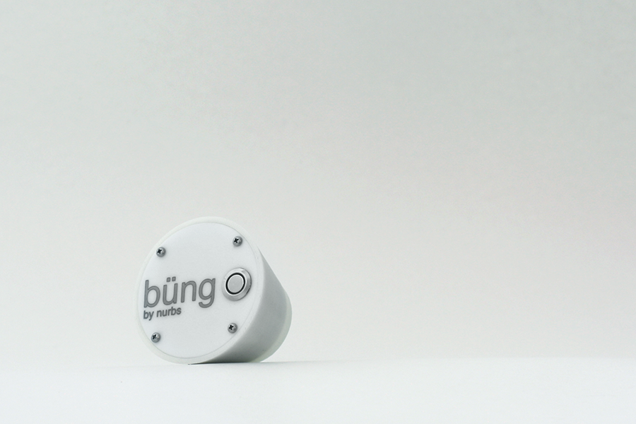
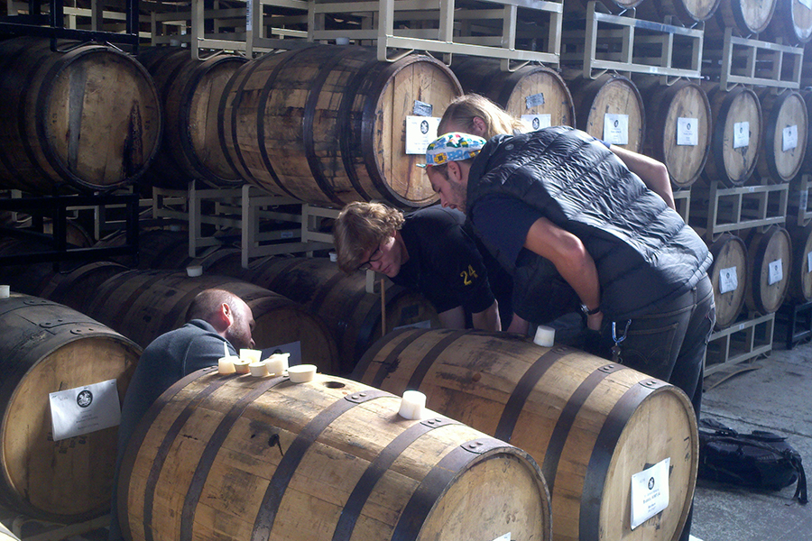
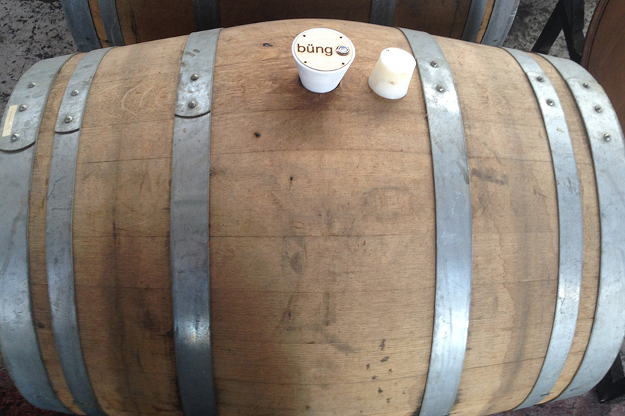
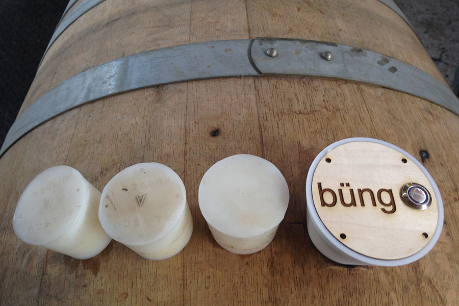

project //
büng
occasion/context
university of california, berkeley computer science 294-84: interactive device design and fabrication fall 2013 assignment:
design an internet-enabled interactive device that solves a real problem for a concrete user group.
user group
employees at micro distilleries and wineries
problem
through a contextual inquiry at St. George Spirits, a distillery in Alameda, we found that distillery employees at a small scale spend over 40 hours a quarter measuring the volume of spirits in each barrel by hand using a dipstick.
solution
We designed a prototype that, when placed in the bunghole of a barrel, automatically measures the distance to the surface of the liquid using ultrasonic and uploads it to a server. Through a website, the user can set measurement intervals and monitor readings.
collaborators
Justin Kay, Carson Schultz, Matthew Visco

final prototype of bung in ABS

observing the workflow at a local distillery

the bung in situ

lineup: bung, bung, bung, büng